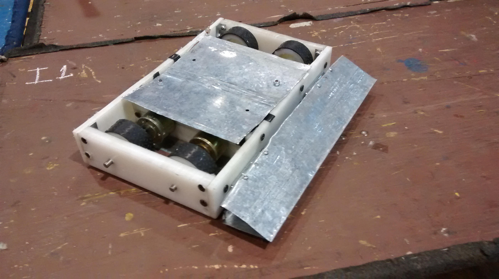

História e Criação da Equipe
A equipe foi criada em 2010 pelo ex-aluno de Engenharia Eletrônica na UTFPR e atual mestrando Marcos Lavarda. Após observar o alto indice de alunos desistindo do curso de Engenharia Eletrônica e ao mesmo tempo a necessidade da UTFPR com a criação de mais projetos de extensão, juntamento com orietações do professor Rubens Alexandre de Faria da UTFPR, criou a Equipe de robótica Crossbots. No primeiro ano de participação, a Crossbots possuia poucos membros, mas durante esses anos, o projeto foi crescendo dentro da universidade, cotanto com mais de vinte membros, estudante de Engenharia Eletrônica, Mecânica, Elétrica, de Computação, Controle e Automação entre outros.
Objetivos Alcançados
Apesar de dificuldades com patrocínio e espaço, hoje, a Crossbots conta com uma sala cedida pela UTFPR e apoio de alguns patrocinadores.

Além disso, a equipe Crossbots foi classificada entre as 10 melhores na modalidade robô de combate Hobbyweight na Winter Challenge 2014, conquistamos o 7º lugar na modalidade sumô e nosso robô seguidor de linha apresentou melhora de 80% no tempo em que realiza o percurso de 19m, completando-o em menos de 30s.
Processo Seletivo
O processo seletivo da equipe consiste em avaliar o interesse dos participantes e a habilidade de buscar conhecimento de forma alternativa.
Dia a Dia na Equipe

Os membros da equipe possuem uma função principal em determinado projeto. Apesar disso, podem livremente ajudar em outras áreas e outros projetos, o que torna a equipe mais unida e interdiciplinar. Os membros relatam que participar da Crossbots gerou um aumento na motivação em continuar o curso que escolheram.
Membros Atuais
Alex Torezin Mendonça - Eletrônica
Alexandre Calado de Oliveira - Mecânica
Aurimar Kent Dicati Oliveira - Mecânica
Cesar Ribas - Marketing
Damaris Mendes Ferreira - Eletrônica
Eluana Sievert - Eletrônica
Everton Ramires de Oliveira - Eletrônica
Fabio Martins - Mecânica
Jaison dos Santos Junior - Mecânica
Jonas Zaduski - Mecânica
Leticia Baleiro - Mecânica
Luís Paulo Custódio - Eletrônica
Marcos Lavarda - Eletrônica
Marcos Vinicius Cardoso - Mecânica
Mateus Felipe Paludo - Mecânica
Matheus Henrique - Eletrônica
Matheus J. Ruzyk - Eletrônica
Rodrigo Latfmann - Eletrônica
Samuel Zaduski - Eletrônica
Tauan Marinho - Eletrônica
Thais Felippe Greca - Mecânica